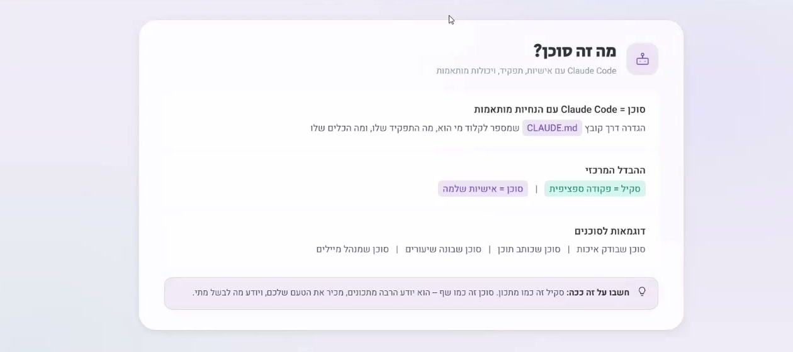
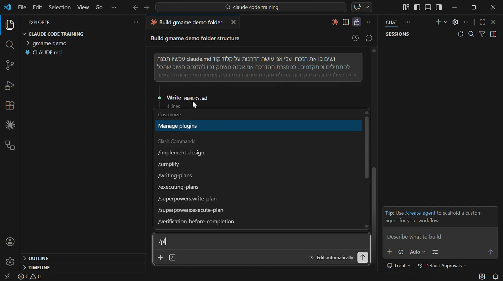
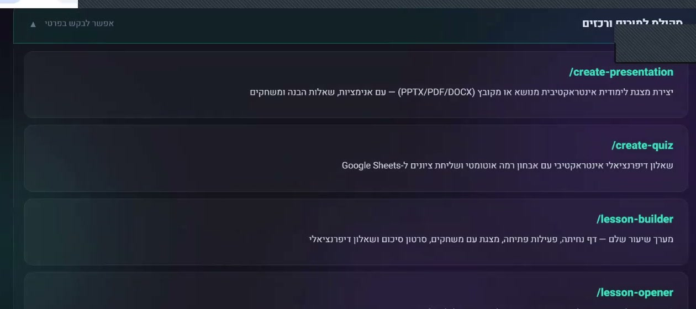
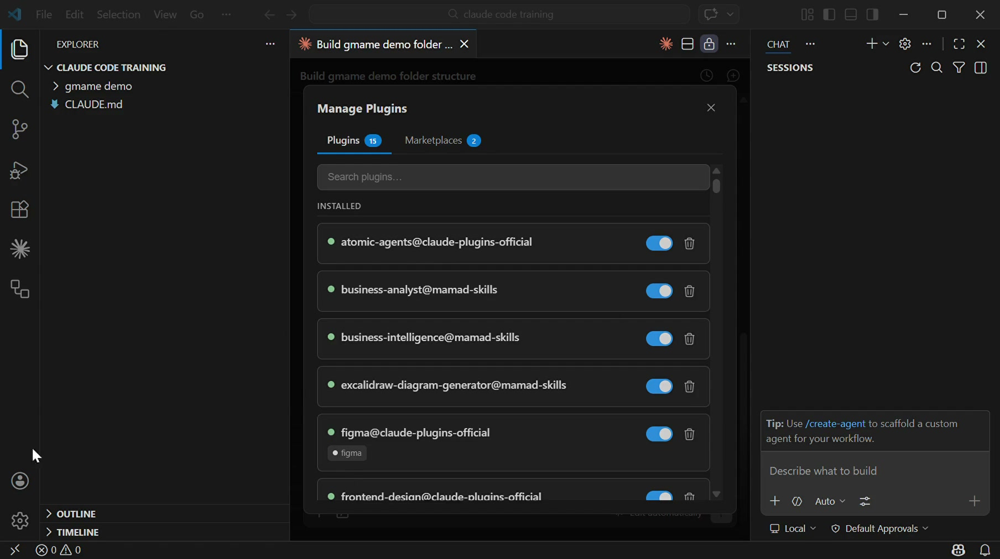
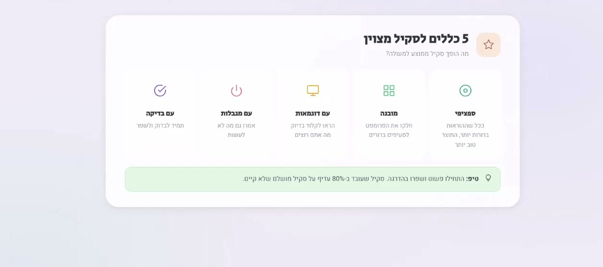
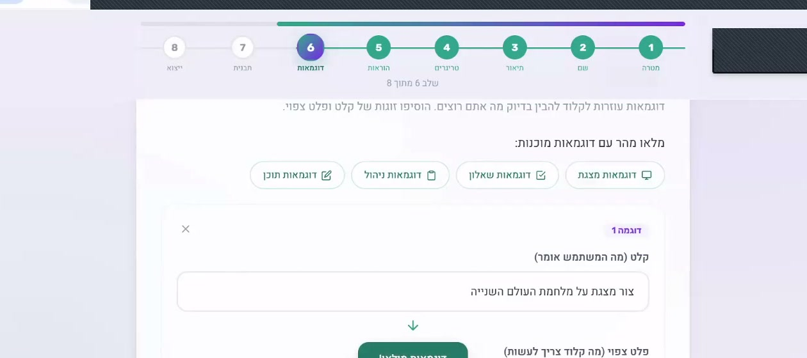
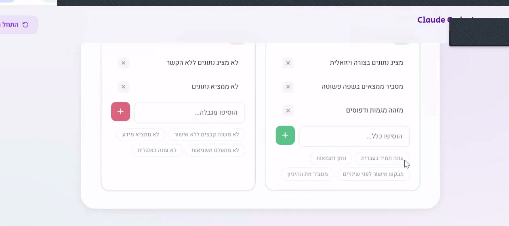
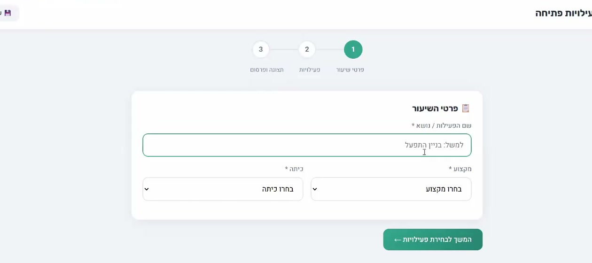

שיעור 2.1 מה זה סקילס וסוכנים
סקילס וסוכנים — הכלים שהופכים את Claude ממרשים למדהים
סקיל = מתכון
סקיל הוא אוסף של הנחיות שמלמד את Claude לעשות משהו ספציפי. בדיוק כמו מתכון למטבח — יש רשימת חומרים, שלבים, וטיפים. רק שכאן ה"מנה" היא תוצר דיגיטלי: מצגת, מסמך, משחק, או כל דבר אחר.
בלי סקיל, Claude הוא כלי חכם אבל כללי. הוא יכול לעשות הכל, אבל לא בדיוק כמו שאתם רוצים. עם סקיל, Claude יודע בדיוק מה העיצוב, הסגנון, השפה, והמבנה שאתם מחפשים.

סקיל = פקודה ספציפית | סוכן = אישיות שלמה. מתוך ההדרכה
סוכן = Claude שעובד לבד
סוכן הוא Claude שמקבל משימה ועובד עליה לבד, צעד אחרי צעד. הוא יכול לקרוא קבצים, ליצור תוכן, לבדוק שגיאות, ולשפר את העבודה — הכל בלי שתצטרכו להגיד לו כל פעם מה לעשות.

כשמקלידים / נפתח תפריט של כל הפקודות (סקילס) הזמינות — פשוט בוחרים ומפעילים
דוגמאות — מה סקיל יכול לעשות?
- למורים: סקיל /create-presentation — כותבים "צור מצגת על מערכת העיכול, 10 שקפים" ומקבלים מצגת מעוצבת
- לבעלי עסקים: סקיל /landing-page — כותבים "בנה דף נחיתה לקייטרינג" ומקבלים אתר עם תפריט וטופס
- למשווקים: סקיל /newsletter — כותבים "צור ניוזלטר שבועי" ומקבלים מייל מעוצב מוכן לשליחה
- לאנשי מקצוע: סקיל /report — כותבים "כתוב דוח סיכום" ומקבלים מסמך מקצועי מסודר
ההבדל — Claude רגיל מול Claude עם סקילים
בלי סקילים: אתם צריכים להסביר כל פעם מחדש מה אתם רוצים — איזה עיצוב, איזו שפה, איזה מבנה.
עם סקילים: Claude כבר יודע את כל ההעדפות שלכם. כל מה שצריך זה לתת לו את הנושא — והוא עושה את כל השאר.
חשבו על סקיל כמו על עובד שקיבל הדרכה מפורטת — הוא יודע בדיוק מה לעשות. לא צריך להסביר לו כל בוקר מחדש.
כתבו רשימה של 3 משימות שחוזרות על עצמן בעבודה שלכם — משימות שהייתם שמחים אם מישהו היה עושה אותן בשבילכם באופן אוטומטי.
שיעור 2.2 התקנת חבילת סקילס
מה זה חבילת סקילס Learni?
חבילת הסקילס של Learni היא אוסף של 8 סקילים מוכנים לשימוש. כל סקיל מתמחה בסוג אחר של תוצר — מסמכי Word, מצגות, גיליונות אלקטרוניים, עיצוב, ועוד.
זה כמו ארגז כלים מקצועי — במקום להתחיל מאפס, אתם מקבלים כלים שכבר עובדים.

חלק מהסקילס המוכנים: /create-presentation, /create-quiz, /lesson-builder ועוד
הסקילים שתקבלו
- /docx — יצירת מסמכי Word מקצועיים
- /pptx — בניית מצגות PowerPoint
- /xlsx — יצירת גיליונות Excel
- /excel-analysis — ניתוח נתונים מ-Excel
- /pdf-processing-pro — עיבוד ושליפת מידע מ-PDF
- /canvas-design — עיצוב גרפי ויזואלי
- /infographic — יצירת אינפוגרפיקות
- /seo-optimizer — אופטימיזציה למנועי חיפוש
איך מתקינים?
ההתקנה פשוטה מאוד — שלושה שלבים:
- הורידו את תיקיית הסקילים מהקישור שתקבלו
- העתיקו אותה לתוך התיקייה .claude/skills בפרויקט שלכם
- הפעילו מחדש את Claude Code — הסקילים מוכנים לשימוש

ב-Manage Plugins רואים את כל הסקילים המותקנים ואפשר להפעיל/לכבות כל אחד
אפשר גם למצוא סקילים נוספים בקהילה — באתר skills.sh יש מאות סקילים שאנשים שיתפו. אפשר להתקין אותם באותו אופן.
התקינו את חבילת הסקילים ונסו ליצור מסמך Word עם /docx. לדוגמה: "צור מכתב הזמנה לערב הורים", "כתוב הצעת מחיר לשירות קייטרינג", או "צור חוזה שירות בסיסי".
שיעור 2.3 יצירת סקיל מותאם אישית

5 כללים לכתיבת סקיל טוב — מתוך ההדרכה
מבנה הסקיל
כל סקיל הוא קובץ בשם SKILL.md שנמצא בתיקייה משלו בתוך .claude/skills. הקובץ מכיל ארבעה חלקים עיקריים:
- name — שם הסקיל (למשל: "מייל מקצועי")
- description — תיאור קצר של מה הסקיל עושה
- trigger — המילה שמפעילה אותו (למשל: /email)
- instructions — ההנחיות המפורטות
דוגמה — סקיל למייל מקצועי
נניח שאתם שולחים הרבה מיילים בעבודה ורוצים שכולם ייראו מקצועיים. אפשר ליצור סקיל שיודע לכתוב מייל בעברית, בטון מכבד אבל לא רשמי מדי, עם חתימה קבועה.
ככה אתם כותבים רק את הנושא — ו-Claude כותב את כל המייל.
הסקיל נשמר כך: .claude/skills/email-composer/SKILL.md — שם התיקייה הוא שם הסקיל. אפשר גם להוסיף תיקיות references/ לקבצי עזר ו-scripts/ לסקריפטים.

מחולל סקילס בפעולה — מגדירים מטרה, שם, דוגמאות, ומקבלים סקיל מוכן
שלב 1 — חשבו מה הסקיל עושה
לפני שכותבים, שאלו את עצמכם: מה המשימה? מי קהל היעד? איך התוצר צריך להיראות? ככל שתגדירו יותר בדיוק — הסקיל יעבוד טוב יותר.
שלב 2 — כתבו את ההנחיות
כתבו בשפה פשוטה מה Claude צריך לעשות. תארו את הסגנון, המבנה, השפה, ואפילו דוגמאות. זה לא קוד — זה פשוט טקסט שמסביר מה לעשות.
שלב 3 — שמרו ובדקו
שמרו את הקובץ בתיקייה .claude/skills/[שם-הסקיל]/SKILL.md. הפעילו מחדש את Claude Code ונסו להשתמש בסקיל. אם משהו לא עובד — שפרו את ההנחיות.
אפשר גם להשתמש במחולל הסקילס — כלי אינטראקטיבי שבונה סקיל בשבילכם. אתם עונים על כמה שאלות, והכלי יוצר את הקובץ אוטומטית.
צרו סקיל אישי למשימה שחוזרת על עצמה בעבודה שלכם. לדוגמה: סיכום ישיבה, תוכנית שיעור, הצעת מחיר ללקוח, דוח שבועי, או ניוזלטר.
שיעור 2.4 דוגמאות מעשיות

שאלון דיפרנציאלי שנוצר בהדגמה חיה — Claude בונה שאלון שלם עם רמות קושי
"מה התפקיד של הסוכן?" — בוחרים בין בודק שיעורים, יוצר עקרונות, או מדריך אישי

מחולל שאלונים — Claude בונה שאלון דיפרנציאלי מפקודה אחת בעברית
דוגמאות לחינוך
דוגמה 1 — מצגת חינוכית
"צור מצגת על מלחמת העולם השנייה, 12 שקפים, לכיתה י" — ו-Claude יוצר מצגת שלמה עם כותרת, פתיחה, הסברים קצרים, שאלות הבנה, תרגול, וסיכום.
דוגמה 2 — משחק אינטראקטיבי
"צור משחק זיכרון על מושגים במדעים" — ו-Claude בונה דף HTML עם משחק: קלפים שמתהפכים, ניקוד, טיימר, ואפשרות להדפיס.
דוגמאות לחינוך מיוחד
דוגמה 3 — דף עבודה מותאם ללקויות למידה
"צור דף עבודה על שברים עם פונט גדול, רווחים מוגדלים, הנחיות צעד-צעד ותמיכה חזותית בצבעים — מותאם לתלמיד עם דיסלקציה" — ו-Claude בונה דף HTML נגיש עם עיצוב מותאם, הוראות ברורות ואפשרות להדפסה.
דוגמאות לעסקים ושיווק
דוגמה 3 — דף נחיתה לעסק
"בנה אתר לעסק קייטרינג עם תפריט, גלריית תמונות, טופס הזמנה וכפתור WhatsApp" — ו-Claude בונה אתר מקצועי מוכן לפרסום, עם עיצוב responsive שנראה מעולה גם בנייד.
דוגמה 4 — ניוזלטר שיווקי
"צור ניוזלטר שבועי עם 3 טיפים מקצועיים וכפתור הרשמה" — ו-Claude יוצר דף HTML מעוצב שמתחבר ל-Google Sheets לשמירת נרשמים.
דוגמאות לאנשי מקצוע
דוגמה 5 — תבנית דוח מקצועי
"צור תבנית דוח סיכום רבעוני עם גרפים, טבלאות ומקום לתובנות" — ו-Claude בונה מסמך מקצועי מוכן למילוי, עם עיצוב נקי וייצוא ל-PDF.
דוגמה 6 — פורטפוליו אישי
"בנה תיק עבודות אישי עם עמוד 'אודות', גלריית פרויקטים, וטופס יצירת קשר" — ו-Claude בונה אתר מרשים שמוכן לשליחה למעסיקים או ללקוחות פוטנציאליים.
כל הדוגמאות האלה נוצרו עם פקודה אחת בעברית. בלי לכתוב שורת קוד. Claude עשה את כל העבודה — כולל העיצוב, התוכן, והמבנה.
בחרו אחת מהדוגמאות ונסו ליצור גרסה משלכם. התחילו מהדוגמה שהכי רלוונטית לעבודה שלכם — מצגת, אתר לעסק, ניוזלטר, דוח, או פורטפוליו.
בדיקת ידע — מודול 2
1. מה זה סקיל?
2. איפה שומרים סקילים?
3. מה ההבדל בין סקיל לסוכן?